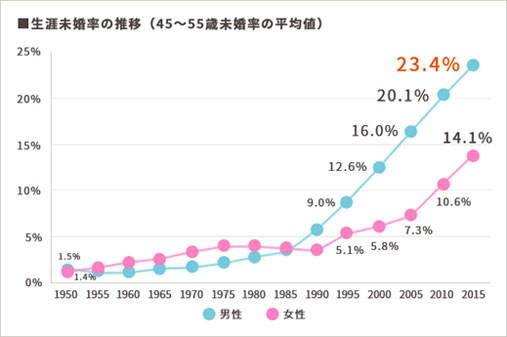
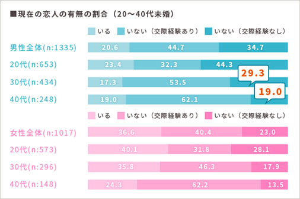
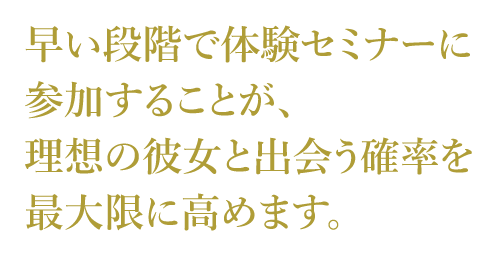

女性からフィードバックをもらえるのは…
お電話でのご予約も可能です
０３-６８７１-９４７７受付時間 10:00～20:00(水曜日定休日)
自分を好きになってくれる
女性を見つけられたら、
もっと満ち足りた日々を送れるのに・・
- 女性と会話すると緊張して恐いと感じてしまう。
- 自分には何の魅力もないと感じ自信が持てない。
- 知り合った女性に恋愛対象として見てもらえない。
- ちょっと断られただけで自己嫌悪になってしまう。
- 『女性は男の顔しか見ていない』と思ってしまう。
- 自分の年齢じゃ今さら彼女なんてと逃げてしまう。
- 飲み会で恋愛の話になるとつい黙り込んでしまう。
- 両親からの『結婚してくれ』のメッセージが辛い。
でも、そんなあなたでも
一つ一つ正しい恋愛の仕方を
学ぶことによって、
理想の彼女を見つけ出し
自分史上で一番幸せな時間を
送ることができます。
セミナー講師 経歴
名前
吉田亮 よしだりょう
所属
MARRYUP株式会社 代表取締役
経歴紹介
東京学芸大学卒業。六本木のホスト経験後、東証一部上場企業でNo.1営業マン。経験人数300人、お見合い逆指名700人越えの経験を活かした、結果にこだわる恋愛カウンセラー。
現在は、婚活恋活以前の、対人能力向上のみに特化した『婚活トレーニング』というコミュニケーション力UPのプログラムを運営する。MARRYUP代表
兼トレーナーとして活躍中！
キャラクターは『優しい・楽しい・愛嬌がある』。得意技は『女性のプロファイリング』・『オリジナルで具体的な褒め』・『各女性にカスタマイズした好意を示す』。
-マリアップでは『婚活トレーニング』を主軸にしたセミナーを日々開催している。大手婚活パーティー運営会社と事前セミナーもコラボ。コミュニケーションというテーマでは学生から熟年夫婦まで幅広い世代に向けても登壇する。月間セミナー開
催数は20本以上。
メッセージ
はじめまして。マリアップトレーナーの吉田亮と申します。
私は婚活トレーナーとして、「結婚できないをデキるに変える」をテーマに、対人能力向上に特化した「婚活トレーニング」という新たなプログラムを開発しました。
今では、1人でも多くの人に恋愛を楽しんでもらい、男女ともに幸せな結婚生活を送ってもらうためのサポートをしています。
私自身、20代の頃に上京をし、「どうすれば理想の女性と付き合えるか？」
ということを試行錯誤し、何度も何度も失敗を重ねてきました。
正直言えば私も最初からモテたということはなく、自分とそう見た目の変わらない男性が、
道ゆけば誰もが振り向く様な素敵な女性と仲良く楽しそうにデートをしているのを見て、
何で自分は一人ぼっちなのかと自分を責めそして強烈な寂しさと劣等感に駆られていました。
『どうしても恋愛が上手くなりたい…』という思いから、
緊張で足をガクガクさせながらホストクラブの門を叩き、ホストとして働いていたこともあります。
そんな中でも多くの経験を積み、コミュニケーションの本質を理解する事で本来の自分の良さと価値に気づき、本当に自分の理想とも言える女性と親しくなることが出来る様になりました。
過去の自分と同じ様に苦しんでいる人達の悩みや不安を解消し、幸せになってもらいたいと思い、『女性に好感を持たれるコミュニケーションの取り方』を誰でもできるよう体系的なプログラムにまとめました。
もし、上記の悩みの中で、一つでもあなたに当てはまるものがあれば是非この先を読み進めていただきたく思います。
皆が当たり前に結婚できる時代は昭和で
終わりました！

未婚男性30代の約30%、40代の約20%がこれ
まで女性とお付合いをした経験がありません。

それは何故かと言うと、かつての日本は皆が結婚する皆婚社会で、良くも悪くも親や親戚などが縁談を持ち掛けて結婚を進めてくれる環境があったからなのです。
だから、今現在恋人がいなかったり、結婚できていない人が、男性として劣っているであるとか、恋愛能力が欠如しているというのは、間違った考え方です。
恋愛のハードルが上がった現代で、
理想の彼女とどうすれば付き合うことが出来るのでしょうか？
Googleで「彼女」「作る方法」で検索してみたり、
他の人には言えないけれど、こっそり恋愛の本を買っ
て読んでみたり、
合コンや街コンに行ったり、恋活アプリなどを使っ
たりして女性にアプローチしても相手にされなかったり、
あるいは方法は何となくわかるけれども、
勇気をだせずに女性にアプローチできなかったり・・・
あなたはその答えをずっと探し求めているのでは
ないでしょうか？
そのような状態から抜け出して
素敵な彼女を見つけるためには、
次の３ステップを学ぶことが必要です！
マリアップ 体験セミナー
初対面の女性の心を
グッとつかむコミュニケーション術
※Day1～3は全て別日に行います。
座学①
伝える力
初対面の『自己紹介』で
『自分のこと』を話すの
は終わりにしてください。
『なんで自己紹介なのに自分のことを話しちゃいけないの？』
とあなたは思うかもしれません。
でもそこには大きな落とし穴があります。
安心してください。
このStep1で落とし穴に落ちない方法についてしっかりとお伝えします。
DAY１ コンテンツ
初対面トークは準備しておけば怖くない？！
マリアップ流3つの形容詞でキャラクター設定と自己紹介の作り方
女性にウケるエピソードトークの作り方
男の「おもてなし」「みだしなみ」で好印象を与える
座学②
聞く力
この聞く力と伝える力は、あらゆるコミュニケーションスキルの中で最重要です。
そして、恋愛経験の無い全ての男性に、このスキルが足りていません。 逆に言えば、このスキルさえ身につけてしまえば素敵な彼女ができてしまいます。
DAY 2 コンテンツ
会話のキャッチボールとは？
会話がより弾む質問とは？
会話がより弾む受け応えとは？
メラビアンの法則
女性に好かれる6原則
お見合い特訓＆
フィードバック
いよいよ最大の目玉のマリアップガールとのお見合い特訓&フィードバックです。
今までのDay1とDay2がインプットだとしたら、このDay3はアウトプットの場です。
このフィードバックで、あなたがなぜ今まで満足の行く恋愛を経験することが出来な
かったのかを知ることが出来ます。
そして、その問題を解決するための方法は全てお伝えします。
この３日間を完璧にこなせれば、
あなたも理想の彼女が作れます
今回このページを見て頂いたあなただけに、
この３日間をたった2,000円！
で学べる体験セミナーに
ご案内いたします！！
マリアップガールとは？
お見合い特訓のお見合い相手となる婚活
サポーターです。
清潔感があり高いコミュニケーション力を
備えた才色兼備な女性を採用しております。
お見合い特訓終了後は的確にフィードバック。
リアルな女性の声を参考にした効果的な
トレーニングを実現いたします。
マリアップガール
一ノ瀬ひとみ
| 名前: | 一ノ瀬ひとみ |
| 血液型: | O型 |
| 身長: | 167cm |
| 学歴: | 短大卒 |
| 出身地: | 東京 |
| 居住地: | 東京 |
| 仕事: | IT系 |
| 家族构成: | 両親と姉 |
| お酒: | 飲みます |
| 休日の過ごし方: | 休みの日は早起きして 色々とやってます^^ |
| 性格: | 真面目、優しい、穏やか |
| 趣味: | 暗闇トランポリン |
| 異性のタイプ: | 誠実で芯のある方 |
マリアップガール
真野せりな
| 名前: | 真野せりな |
| 血液型: | A型 |
| 身長: | 154センチ |
| 学歴: | 短大卒 |
| 出身地: | 神奈川 |
| 居住地 | 千葉県 |
| 仕事: | 営業事務 |
| 家族构成: | 父、母、姉 |
| お酒: | ほろ酔い程度 |
| 趣味: | ジム･ダンス･ダイエット･ 旅行 |
| 休日の過ごし方: | 家事・ダイエットを忘れて 好きなものを食べにいく事 |
| 趣味: | 素直･ストイック･目立ち たがり |
| 異性のタイプ: | 価値観の違いを尊重し 合える人 |
フィードバックシートとは？
あなたのコミュニケーション能力を
『見える化』した独自メソッド！
良かったところは伸ばし、
悪かったところは修正しましょう。
わずか2～3回のお見合い特訓で合格点の80
点以上を出される方も珍しくありません。
5段階の『1』は-5点カウント。『1』が多いと-20点とかになることも!?
この30項目で『5』『4』をほぼもらえれば、初対面の女性から好感を持たれます！
まずは『1』『2』の箇所を次回のお見合い特訓で意識！
初回では良い点が出しにくい項目！
5段階が何個ずつあるかの合計で100点満点の点数化。
マリアップガールが女性目線で感じた『良かった点』『悪かった点』を直筆でコメント。
これが女性からのリアルな意見なので真摯に受け止めましょう。
私たちが「お見合い特訓」
してフィードバックしました

マリアップのお見合い特訓とその
フィードバックシステムは、
『 年齢 = 彼女いない歴 』の
方の恋愛経験を埋めるための
強力なトレーニングプログラムです。
マリアップを受講
されたお客様の声
コイケさん
(33歳)
製薬会社勤務
『 年齢 ＝ 彼女いない歴 』の僕に念願の彼女ができました。
Q 1なぜマリアップのセミナーを受けてみようと思ったのですか？
歳を重ね、近頃周囲が次々と結婚していくのが刺激となり、交際と結婚について意識するようになりま
した。
インターネットでマリアップのホームページを見つけて、コミュニケーションの座学と同時にお見合い
特訓で交際を疑似体験出来るところにとても興味をもち試しにとセミナーの受講を決めました
Q2 マリアップのセミナーを受けてみた感想をお聞かせください。
お見合い特訓のフィードバックにより自分の弱点が洗い出されて、それを一つ一つ改善するようにした
ことで、段々と交際に対するノウハウと自信が身についてきました。今後実際の交際でも座学と特訓で
学んだことを活かすように心がけたいと思います。
タケイさん
(28歳)
建設現場監督
初対面女性との会話の苦手意識が克服できました。
Q 1なぜマリアップのセミナーを受けてみようと思ったのですか？
異性とのコミュニケーションを取るのがよくわからなくて、なんとかしたいと思い参加しました。
クラタさん
(31歳)
市役所勤務 公務員
初回から2回目デート、3回目デートにも行けるようになりました。
Q 1 なぜマリアップのセミナーを受けてみようと思ったのですか？
結婚相談所にも入会していましたが、マリアップのお見合い形式の特訓は今までになく、もしかしたら
ここれまでの婚活に変化が出るかもしれないと思ったからです。
スギヤマさん
(39歳)
システムエンジニア
リアルな女性からその場でフィードバックをもらえるシステムはマリアップ ならでは。
Q 1 なぜマリアップのセミナーを受けてみようと思ったのですか？
エンジニアという仕事柄、人と会話することが苦手で会話の仕方が分からないという悩みがありました。
タミヤさん
(26歳)
WEB制作
過去の恋愛のトラウマが消えた実感がありました。
Q 1 なぜマリアップのセミナーを受けてみようと思ったのですか？
私は元々営業マンで、コミュニケーションには自信があったのですが、とあるトラウマがあり仲良くな
った女性に対して上手に好意を伝えることが出来ずにいました。
タニガワさん
(43歳)
会社員・経理
手取り足取り懇切丁寧なところが助かります。
Q 1 なぜマリアップのセミナーを受けてみようと思ったのですか？
実際に女性と会話したときに自分がどう見られているのか、思われているのかを知りたかったため。
Q ＆ A
はい大丈夫です。業界初のお見合い特訓＆フィードバックのシステムで行えば、人それぞれスピードは違いますが必ずコミュ力UPにつながります。
今まで女性と2人で食事に行った経験すらないのですが、大丈夫でしょうか？
心配ございません。婚活トレーニングに恋愛経験は不問です！毎回本物のカフェでリアルに『お見合い特訓』をするので、会員様の経験不足を補う経験が
できるようになっております。
恋活で使っても大丈夫ですか？
はい大丈夫です。実際に『結婚はまだ考えていないんだけど彼女が欲しい』という会員様もいらっしゃいます。
婚活トレーニングを受けていることを知られたく無いのですが・・・
ご自宅宛に電話や何か郵送物を送ることはございません。ご安心して参加ください。
40代後半ですが大丈夫ですか？
はい大丈夫です。マリアップのプログラムの対象年齢は20～49歳です。年齢が高くても女性への苦手意識を克服された事例が多数ございます。
体験セミナー終了後に本コースへの勧誘などはありますか？
体験セミナー終了後は会員様の目標を達成するためのプランをご提案しておりますが、無理な勧誘は致しませんのでご安心ください。

今回、あなたは理想の彼女を見つけることによって、
幸せで楽しい生活・人生を手に入れる為のきっかけを探し求めて
この文章をここまで読んでいただいたと思います。
多くの男性がパートナーがいないことで孤独感を感じてしまったり、
つい『結婚なんてしたくない』と言って強がり、自分にウソをついてしまっています。
あなたもこれから一生、そんな負の感情を抱えたまま過ごしていきますか？
今日があなたの人生の一番若い日！
私たちマリアップは、少しでも多くの男性を
そんな状態から抜け出すためのバックアップさせて頂き、
あなたが思い描いて居た理想の恋愛や、
結婚生活を実現させるお手伝いをしたいと思っています。
今が人生で最大のチャンス！
このままページを閉じ後で後悔して欲しくありません。
今ここで、大事な一歩を踏み出してください。
マリアッププログラムを習得してあなたが理想とする女性と付き合い、
幸せな結婚生活を実現させてください。
それは今、たった一つのクリックから始まります。
| 日程 | 〇月〇日(◎) 19:00～ 〇月〇日(◎) 14:00～ 〇月〇日(◎) 19:00～ 〇月〇日(◎) 14:00～ ※横浜会場 〇月〇日(◎) 19:00～ 〇月〇日(◎) 14:00～ 〇月〇日(◎) 19:00～ ※横浜会場 |
| 参加対象者 | 未婚男性 20～49歳 |
| 所要時間 | DAY１、DAY２ 75分、DAY３ 90分 ※DAY1～3は全て別日に行います。 |
| 費用 | 1,000万円 |
| 連絡先 | 2,000円 |
| お支払い方法 | クレジットカード、銀行振込 |
女性からフィードバックをもらえるのは…
お電話でのご予約も可能です
０３-６８７１-９４７７受付時間 10:00～20:00(水曜日定休日)